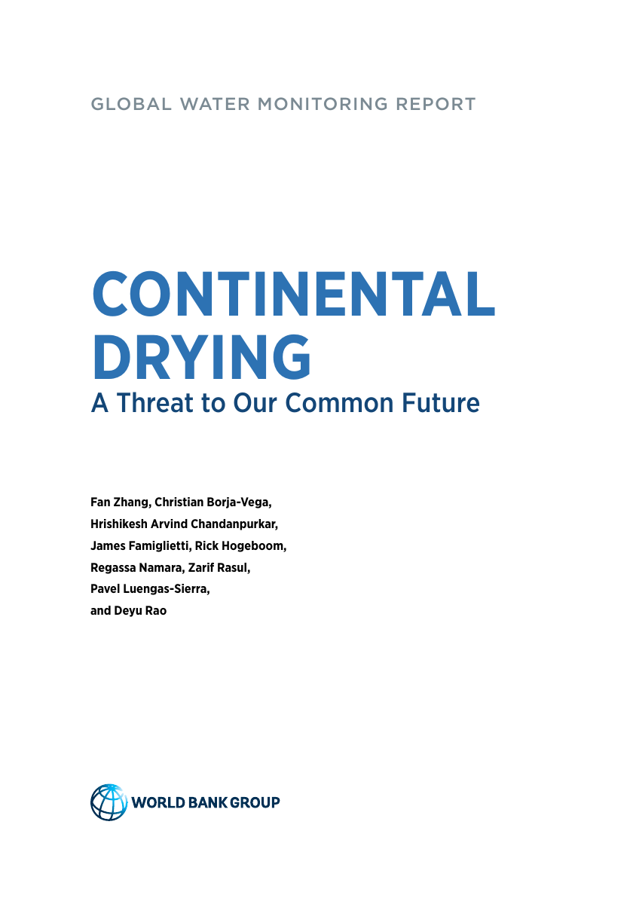
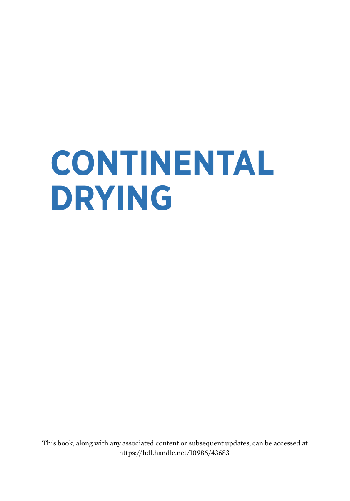
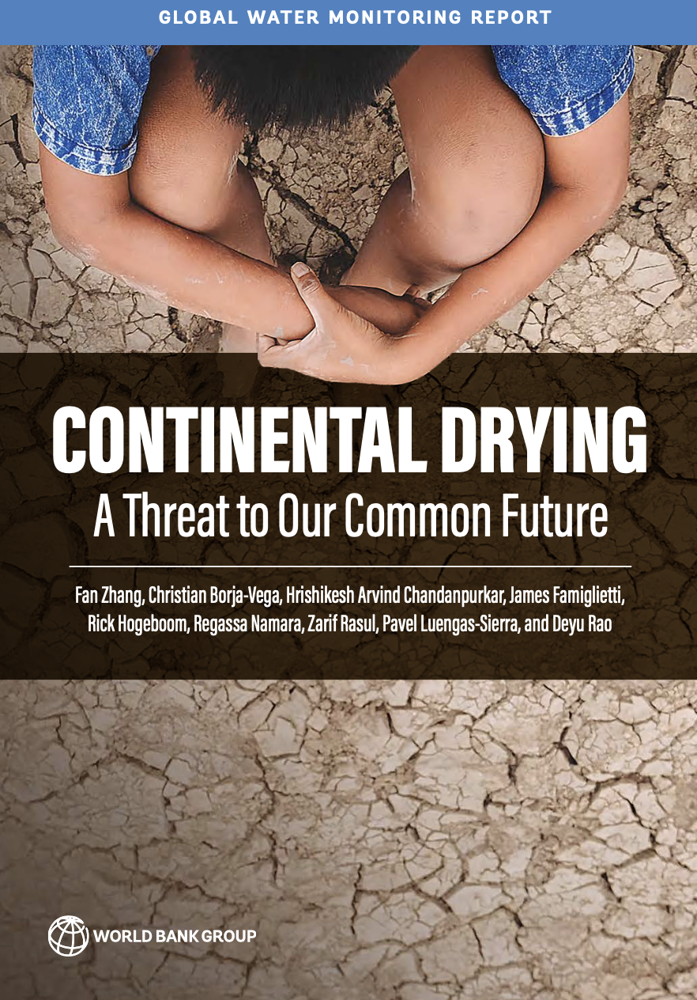

Source: WHO/UNICEF JMP (2025), World Bank



Terrestrial freshwater availability is decreasing at an annual rate of 324 billion cubic meters, which is enough to meet the annual water needs of 280 million people.
Energy subsidies make groundwater pumping artificially cheap, accelerating depletion. Correcting these pricing distortions is one of the most effective levers to preserve freshwater resources.
Source: Continental Drying — A Threat to Our Common Future, World Bank
Poor water and sanitation access combined with poverty creates a poverty trap, increasing mortality, stalling human capital, and reducing earnings across generations.
Those trapped are less resilient to climate shocks. Water infrastructure is vulnerable to droughts and floods, while poor sanitation generates emissions that worsen climate risks.
Source: World Bank Triple Burden Analysis (2025)
Source: IBNET Tariff Portal, constant 2025 USD
Source: Regulators Performance Database, IBNET
Source: IBNET Tariff Portal, World Bank
Agricultural water is rarely priced or metered. Fixed-charge systems do not encourage conservation, because costs are often unrelated to actual consumption.
Current agricultural pricing structures often fail to reflect scarcity or create strong incentives for conservation in the largest water-using sector.
Source: Borja-Vega, Zhang, Diallo (2023), American Economic Journal: Applied Economics
Establish independent regulators with legal authority to set cost-reflective tariffs and protect consumers.
Adopt incentive-based tariff methodology (Regulated Asset Base) to allow long-term capital recovery and attract investment.
Replace universal with targeted subsidies. Phase out blanket subsidies. Use output-based aid, social connection grants, or IBT lifeline rates.
Link tariffs to service quality KPIs (NRW, service hours, water quality, bill collection). Builds public acceptance of reform.
Regulatory and governance clarity. Clear contract enforcement, tariff methodology, investor protection through independent regulators.
Sector financial sustainability. Cost-reflective tariffs, creditworthy utilities with audited financials, ring-fenced revenues for O&M.
Political and social acceptability. Government commitment at highest level with affordability safeguards and stakeholder engagement.
Scale private participation from BOT bulk supply (nascent) to management contracts (developing) to concessions (maturing) to capital markets and green bonds (advanced).
Source: WSIP 2025; World Bank Water Tariff Roadmap 2026